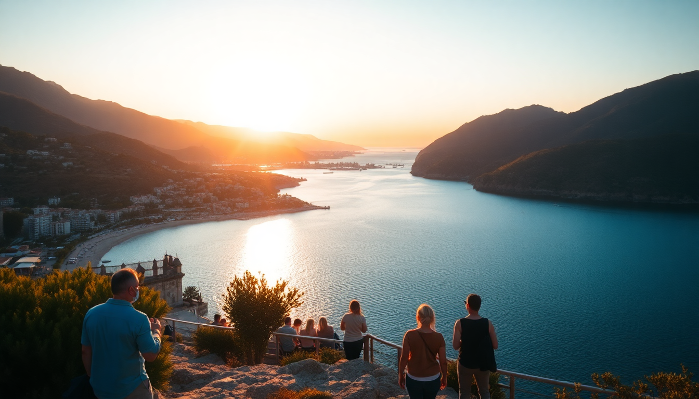

Where to Stay in Antalya: Best Areas for Every Budget

I spent two weeks in Antalya last fall, bouncing between four different neighborhoods to figure out which area actually works for different travel styles. The city is split between the old harbor district, the long beach strips, and the resort corridor east of town—and each feels like a completely different destination. Here’s where I’d stay based on what you actually want to do.
Is Kaleiçi worth the hype for first-time visitors?
Yes, if you want to be steps from history and nightlife, but no if you need quiet sleep or easy car access. Kaleiçi is the walled old town, a tangle of narrow lanes with Ottoman-era houses converted into boutique hotels, carpet shops, and rooftop bars. I stayed at Tuvana Hotel for three nights—a restored mansion with a courtyard pool—and loved being able to walk to Hadrian’s Gate in two minutes and the marina in five.
The downside: streets are cobbled and many are pedestrian-only, so if you’re dragging a suitcase or renting a car, you’ll struggle. Parking is expensive (around 100 TL per day at the Kaleiçi Otopark). Also, bars on Hesapçı Sokak play loud music until 2 AM. Bring earplugs.
Best for: couples, solo travelers, history buffs Skip if: you have a car, need family-friendly space, or want a beach within walking distance
Where should families stay with kids?
Lara Beach is the obvious answer, but I’d steer you toward Konyaaltı Beach instead. Lara has the all-inclusive mega-resorts—Rixos Downtown and Mardan Palace—which are fine if you never want to leave the property. But Konyaaltı’s pebble-and-sand beach has a wide promenade, rental bikes, and a fraction of the crowds. I booked a room at Hotel 1207 for my sister’s family: it’s a mid-range hotel directly across from the beach, with a pool and a kids’ playroom. The tram line (AntRay) stops a 10-minute walk away, so you can get to Kaleiçi without a taxi.
Lara’s beaches are narrower and backed by high-rise hotels that block the breeze. Unless you’re committed to a resort with water slides and a buffet, Konyaaltı gives you more flexibility for less money.
Best for: families with young kids, budget-conscious travelers Skip if: you want a resort-only vacation or need fine sand (Konyaaltı is pebbly)
What’s the best area for nightlife and dining?
Stick to Kaleiçi for bars and Muratpaşa for restaurants. In Kaleiçi, the marina strip has touristy but fun seafood spots—7 Mehmet is overpriced but the view is legit. For better food, walk five minutes to Muratpaşa’s İskele Caddesi, where locals eat. I had the best pide of my trip at Pide Kebabcım (a no-frills joint with plastic chairs and a wood-fired oven). After dinner, head to Club Arma on the water for cocktails, but expect 150 TL for a gin and tonic.
If you want a livelier club scene, Lara’s beach clubs like Soho Beach draw a younger crowd on weekends. But honestly, the real nightlife in Antalya happens in the old town’s backstreet bars—The Old Pub has live jazz on Thursdays and a proper Guinness pour.
Best for: foodies, bar-hoppers, couples on a date night Skip if: you’re early-to-bed or traveling with toddlers
Which area works best for beach lovers who don’t want a resort?
Konyaaltı is your spot. The beach stretches for 7 kilometers, with public access points every few hundred meters. I spent a full day at Beach Park, which has sunbeds for 50 TL, a clean changing room, and a café serving decent gözleme. The water is clear and calm—swimmable from May through October.
Avoid the section directly in front of the Antalya Aquarium complex; it’s packed with families and vendors. Walk 15 minutes south toward Liman Caddesi, where the crowd thins out. I rented a beach umbrella and a chair from a kiosk run by a retired fisherman named Kemal—he charged me 30 TL for the whole day.
Best for: solo travelers, budget travelers, anyone who wants a beach without a wristband Skip if: you need resort amenities like towel service or a swim-up bar
Should I stay in Belek for golf and luxury?
Only if you’re playing golf or want a secluded all-inclusive. Belek is a 30-minute drive east of Antalya city center, and it’s basically a string of golf resorts: Cullinan Belek, Maxx Royal, Gloria Golf Resort. I stayed one night at Kaya Palazzo as a splurge—the room was enormous, the private beach was spotless, and the infinity pool overlooked the Mediterranean. But you’re trapped. There’s no town, no walkable restaurants, no public transport. You need a taxi (300 TL one-way) to get anywhere.
If you’re not a golfer, skip Belek. You’ll pay resort prices for a location that feels like a gated compound. I’d rather spend the same money on a boutique hotel in Kaleiçi and eat out every night.
Best for: golfers, honeymooners who want to disconnect, families who never leave the resort Skip if: you want to explore Antalya or eat at local restaurants
What’s the most affordable neighborhood for backpackers?
Muratpaşa—specifically the area around Şarampol Caddesi and Güllük Caddesi. It’s not pretty: think concrete apartment blocks, kebab shops, and bus stops. But a bed in a clean hostel like Antalya Hostel runs 200 TL per night, and you can get a full döner plate for 60 TL at Dönerci Şahin Usta. The AntRay tram connects you to Kaleiçi (15 minutes) and Konyaaltı Beach (20 minutes). I stayed here for two nights when my budget ran thin, and it worked fine.
Downside: no atmosphere. Muratpaşa is a working-class district, not a tourist zone. If you want social hostels with rooftop bars, pay more for Kaleiçi.
Best for: backpackers, solo travelers on a shoestring, anyone who just needs a bed Skip if: you want charm, quiet, or a view
FAQ
Is it safe to stay in Kaleiçi at night? Yes, generally. The main streets around the marina and Hadrian’s Gate are well-lit and patrolled by police until midnight. I walked back alone at 1 AM from Club Arma to my hotel and felt fine. Stick to the main alleys—the unlit side streets can have stray dogs and uneven paving.
Do I need a rental car in Antalya? No. The AntRay tram covers Kaleiçi, Konyaaltı, and the central bus station. Taxis are cheap (50-100 TL for short rides). For Lara Beach or Belek, you’ll need a taxi or a dolmuş (minibus). I rented a car for a day to drive to Olympos ruins, but parking in Kaleiçi was a headache. Skip the car unless you’re heading out of town.
What’s the best time of year to visit Antalya for beach weather? May, June, and September. July and August are brutally hot (35°C+ with humidity) and crowded with Russian and German tourists. I went in late September—water was 26°C, beaches were half-empty, and hotel rates dropped 30%. Avoid November through March unless you’re here for hiking or ruins; many beach clubs and open-air restaurants close.
Conclusion
- Kaleiçi for history, nightlife, and walkability—but bring earplugs and skip the car.
- Konyaaltı for the best public beach and family-friendly hotels without the resort bubble.
- Muratpaşa for budget sleeps and local eats, but zero charm.
- Lara Beach only if you want an all-inclusive resort with a pool and don’t care about the city.
- Belek for golf or a secluded splurge—otherwise overpriced and isolated.